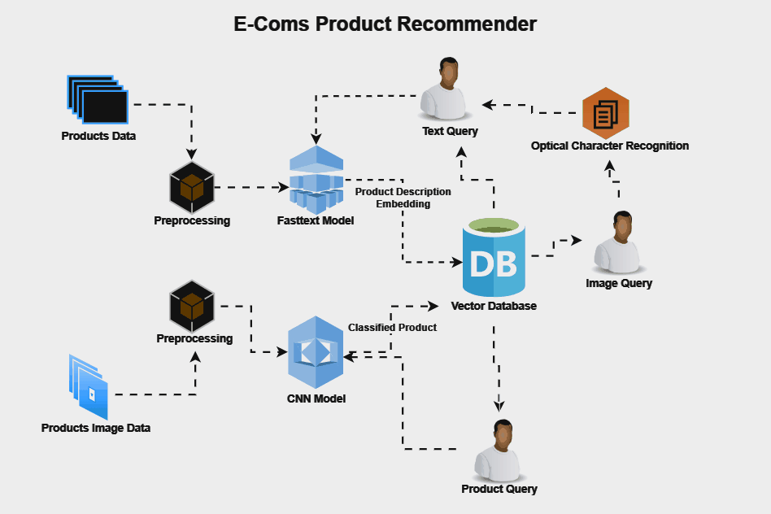

001 : E-coms Product Recommender
This system recommends e-commerce products based on text query from users, image query and product query.
About Project
This project involves the development of a comprehensive recommendation system for an e-commerce platform, integrating natural language processing, vector similarity search, and computer vision. FastText was utilized to embed product descriptions into vector representations, which were then indexed in Pinecone, a scalable and efficient vector database. Additionally, a CNN model was implemented to detect and classify products based on images, enhancing the recommendation capabilities. The system allows for querying these vectors with natural language inputs and image inputs, efficiently returning top similar products. This dual approach significantly improves the user experience by providing highly relevant product suggestions based on both text descriptions and visual content. The project demonstrates expertise in machine learning, NLP, computer vision, and scalable vector search technologies, showcasing the ability to create sophisticated and effective recommendation systems.
System Architecture
The integrates natural language processing (NLP) and computer vision to provide relevant product suggestions based on text descriptions and images.
System Components
Workflow
- User Input: The user provides a product description or image through the web application.
- Text Processing: The WebApp sends the description to the NLP Module, which uses FastText to embed the description into a vector and queries Pinecone.
- Image Processing: If an image is provided, the WebApp sends it to the CNN Module, which uses the CNN model to create a vector representation and queries Pinecone.
- Query and Retrieve: Pinecone retrieves the top 3 similar product vectors and returns them to the respective module.
- Display Results: The NLP or CNN Module sends the top 3 product recommendations back to the WebApp, which then displays them to the user.
- A question of interest for this analysis is to know when when most trips taken in terms of time of day or month of the year, From investigating the dataset most trips are taken at late hour of the day most trips are taken during weekdays rather than weekends. thursdays and tuesdays are the most prefered days to take a trip. on average, trips on weekends tend to be slightly longer than on weekdays and has less outliers and more spread distribution
- Most trips were taken in the month of March and April but drastically drops in the month of December. changes in monthly trips count tended to be similar for both user groups; this pattern persists till November and in the month of December, the number of "Customers" became, higher than this of "Subscribers".
- for both users, trips peak around the hours of 8-9am and 5-6pm but drops around 10am - 3pm. though it seems to drop more significantly for subscribers customer's trips tends to peak on the 12th, 13th and 19th day but seems to drop significantly on the 14th and 15th day, while for subscribers, it peaks on the 11th and 12th day but drops on the 15th and 27th day subscribers trips peaks mostly on weekdays but significantly drops on weekends while customers demand seem consistent accross the entire week, we could assume that most subscribers use bikes to and from their works based on our findings for trips per hour
- Trip durations in the dataset ranges from 1minute to about 90minutes. The distribution is right-skewed on a linear scale but when plotted on a logarithmic scale, the distribution of trip durations gets closer to normal but with a rough shape.
- Customers tend to have more duration in their trips than Subscribers and their distribution also have more spread compared to Subscribers. In other words, Customers tend to vary their trip durations, while Subscribers mostly use the service for short trips.
Duration distribution has more spread on weekends for both user types but is more apparent for Customers, and the meadian trip duration for Customers has more spread which means Customers tend, on average, to take longer trips, and their trips' durations vary more compared to Subscribers.